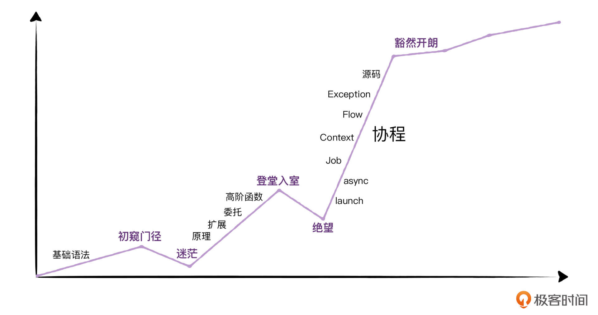
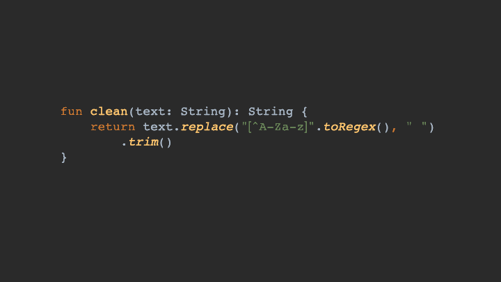
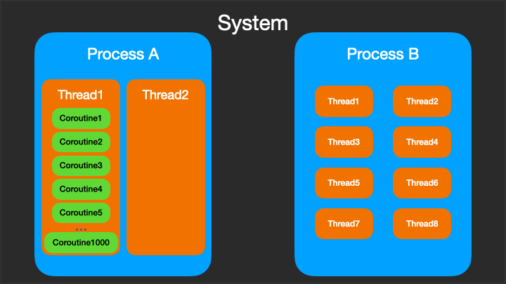
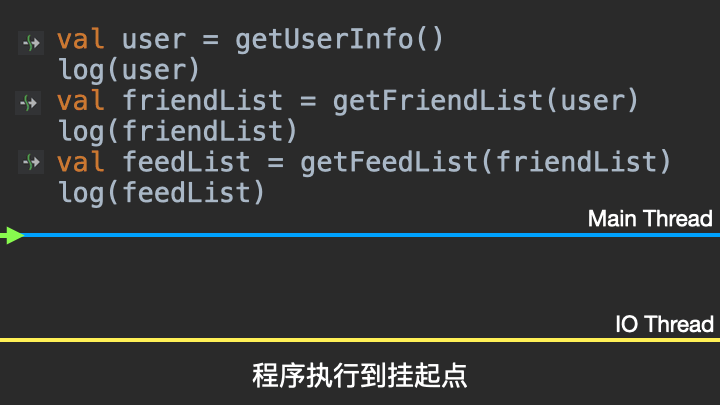
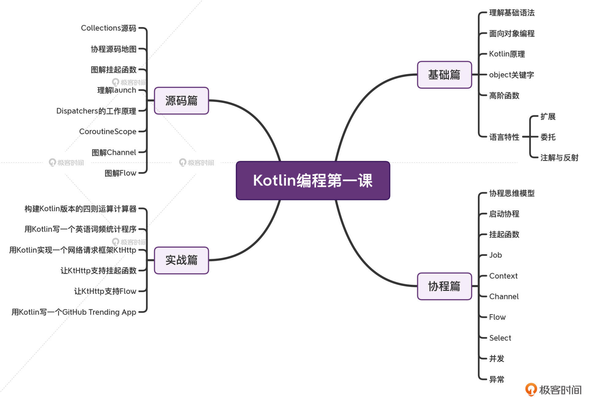
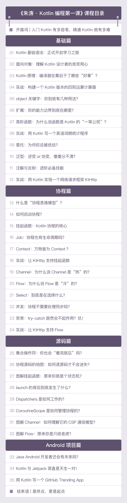

Audio开篇词丨入门Kotlin有多容易，精通Kotlin就有多难
你好，我是朱涛，欢迎和我一起学习 Kotlin。
作为一名 Kotlin、Android 领域的谷歌开发者专家，我曾经负责过陌陌创新业务的 Android 客户端。从 2017 年开始，我和我的团队成员们就一直在探索 Kotlin 在 Android 中的应用，并在 Kotlin 函数式编程、Kotlin DSL、Kotlin 协程以及 Android Jetpack 方面积累了一些实践经验。我的博客“Kotlin Jetpack 实战”也影响和帮助了数万名 Kotlin、Android 开发者。
Kotlin 于我来说，就如恋人一般，令我深深地着迷。在过去的 5 年里，我一直在使用 Kotlin 进行 Android 研发的工作。但实际上，在使用 Kotlin 之前，我的主力语言是 Java，那段时间，我负责过陌陌 Android 客户端的代码规范以及性能优化工作。在这段工作里，我见过各式各样的 Java 烂代码，有些烂代码是程序员主观疏忽写出来的，而还有些代码是业务本身复杂度决定的。那个时候，我就意识到了 Java 语言的一些缺陷。
语法表现力差。
比如，Java 1.8 之前不支持 Lambda 表达式，匿名内部的写法繁琐；在函数方面，不支持高阶函数，不支持参数默认值，也不支持函数命名参数。当我们需要在 Java 当中实现类似需求时，不得不自己寻求其他替代方案，这就进一步提高了开发难度，降低了开发效率。
可读性差，难维护。
如果我们单独去看 Java 的每个语法表现力的问题，可能会觉得没什么大不了。然而，当这样的问题积少成多，并且随着工程复杂度的提升，语法表现力的问题会进一步演变成可读性问题、维护性问题。
举个例子，Java 当中的 Callback，如果只是一到两个 Callback 的嵌套，那么它还在容忍的范围内，一旦业务变得复杂，Callback 嵌套超过 3 层，代码可读性就会急剧下降，而后的维护工作将会变成一场灾难！出现 Bug，也只是迟早的问题。
Java 自身的语法设计也使它更容易出错。
比如，Java 基础类型的隐式转换，你可以直接将字符变量赋值给整型变量，而编译器也不会报错。再比如，Java 的内部类会偷偷持有外部类的引用，从而在某些场景中导致内存泄漏。Java 这样的语法设计就让我们程序员更容易写出 Bug。
并发编程，在 Java 当中也是一大难题。
在 Java 当中，线程与并发以及它复杂的同步机制，它们就像是一头头难以驯服的野马，初中级 Java 程序员都会对其望而生畏。
以上 Java 的所有缺陷，最终反映到实际工作中，就会变成：前期开发效率低，中期线上问题多，后期代码难维护。其实，归根结底，都是因为 Java 实在是太老了。而 Kotlin 作为一门刚出生不久的语言，就是为了解决这些问题而生的。
在与 Kotlin 相伴 5 年的过程中，我一直在研究、探索这门语言的原理和使用技巧，也沉淀了一些实践经验和思考感悟，希望通过这门课，能给你带来一些新的有关 Kotlin 的认知以及使用参考，也能够让你在学习之后，可以使用 Kotlin 来解决工作中的实际问题。
Kotlin 为什么值得学？
其实，不管你之前是不是有过 Java 的使用经验，你都需要来学习一下这门年轻的语言。我认为主要有这样三个原因。
第一，极高的生产效率
Kotlin 具备简洁的语法和现代化的语法特性，让使用者可以用更少的时间，以更高的标准，来完成更多的工作。换句话说，也就是跟 Java 正好相反：前期开发效率更高，中期线上问题更少，后期代码更容易维护。
以我自身为例，在我们团队完全适应了 Kotlin 的开发节奏以后，线上崩溃率就大大降低了，而空指针异常也几乎没有了。另外，曾经要 3 人完成的工作，在使用 Kotlin 以后，2 个人就能完成，而且还能完成得更好。
为此，不仅各个大厂的 Android 部门在积极转型，就连 Android 官方团队也都在用 Kotlin 写底层的源码，Kotlin 相关的 SDK 也层出不穷。到目前为止，各个大厂的 Android 招聘要求里都会加上一条“要求熟悉 Kotlin”或“熟悉 Kotlin 语言者优先”。
第二，强大的兼容性
Kotlin 可以与 Java 混合编程，这一点尤为重要，不然，Kotlin 的吸引力将大打折扣。因为在我们的实际工作当中，大部分情况都是在老旧工程的基础上去开发新功能的，而将整个模块甚至是程序推倒然后用 Kotlin 重写，其实是很不现实的。
Kotlin 强大的兼容性，就让我们可以复用从前的 Java 代码，也能让我们以渐进的方式从 Java 迁移到 Kotlin，而不必担心是不是要一次性重写很多代码，从而产生新的问题。
第三，科技巨头加持，Kotlin 的发展前景很广阔
2017 年，Google 宣布 Kotlin 成为 Android 的官方语言后，人们对于 Kotlin 的关注度就一直在上升。而这也就导致，很多人听到 Kotlin，都会下意识地认为它是用来写 Android 的。
其实，Kotlin 不仅仅只是在 Android 领域有所建树，据我所知，Amazon、Adobe都有将 Kotlin 应用到后端开发；至于 Kotlin 跨平台方面，国际上Philips、Square等公司也都有不错的实践，国内的携程技术团队在这方面也有不少探索和实践。随着 2021 年 Android Jetpack Compose 的发布，JetBrains 在其基础上又扩展出了Compose-jb，让 Kotlin 还能跨平台编写 UI 界面。
总而言之，对于 Android 开发者来说，Kotlin 已是必学的编程语言；而对于其他领域的开发者来说，Kotlin 也有着非常好的前景，现在入坑还来得及！
Kotlin 到底难在哪？
那么，在看到了 Kotlin 有如此多的使用优势和如此广阔的发展前景之后，也有不少人都纷纷投入了 Kotlin 的学习大军当中，甚至很多人都是在有了 Java 的知识基础和使用经验之后，再去学习的 Kotlin，而且他们会觉得，Kotlin 的学习很简单，它跟 Java 的很多语法都是一样的，没啥难的嘛。
但其实，这是对 Kotlin 的一种误解。带着 Java 经验学习 Kotlin，这既是一种助力，同时也是一种阻碍。在 Kotlin 学习的前期，Java 经验可以帮我们快速掌握它的语法，但到了后期，我们脑子里的 Java 老一套会限制我们进一步提升。如果我们迟迟不转变自己的思维，只会在 Kotlin 学习之路上越跑越偏。
从我的实践经验来看，Java 开发者学习 Kotlin 的难点，主要在于思维的转变：
不变性思维，虽然 Java 当中也存在 final 不变性，然而，Kotlin 却将这件事做到了极致：Kotlin 要求我们在定义一个变量、集合的时候，就明确规定它的不变性。Kotlin 这样的设计，就是希望在软件当中尽可能地消灭可变性。如果我们脑子里没有不变性思维，我们写出来的 Kotlin 代码将“惨不忍睹”。
空安全思维，Kotlin 的类型系统分为可空和不可空类型，这样的设计也彻底改变了我们的编程习惯。想要处理好 Kotlin 的空安全问题，我们也必须完成思维的转变。
表达式思维，在 Kotlin 当中，if、else、when 之类的语句，还能作为表达式来使用，这样的语法特性往往可以帮我们简化代码逻辑。
函数思维，在 Kotlin 当中，函数是一等公民。Kotlin 也是一门积极拥抱函数式编程的语言，在 Kotlin 的一些语法设计上，总能看到一些函数式的影子。命令式编程与函数式编程，它们两者有各自的优缺点，也有各自擅长的领域。而 Kotlin 除了有命令式的一面，对应地，它还有函数式的一面。
协程思维，Java 开发者在学习 Kotlin 协程的时候尤为痛苦，因为，在 Java 开发者脑子里只有“线程思维”，而对协程一无所知。想要真正地理解和掌握 Kotlin 的协程，我们需要从根本上改变我们脑子里的思维模型。
Java 开发者学习 Kotlin 很难，那么零基础学习 Kotlin 会不会更简单呢？毕竟不存在旧思维束缚啊！
其实不然，零基础，也就意味着编程经验的欠缺。因此，零基础学习 Kotlin 最大的问题在于：容易浮于 Kotlin 语法表面，体会不到 Kotlin 设计的美感，悟不出 Kotlin 特性的应用场景，看不到 Kotlin 底层的实现原理。
不过，请放心，以上所有的问题，在这门课当中，都会得到解决。
除了以上的学习难点以外，Kotlin 本身的学习曲线和其他的语言不太一样，它是一门易学难精的语言。Kotlin 的语法非常简洁，确实极其容易入门；但同时，它又拥有许多的新特性，不容易掌握。即使你掌握了 Kotlin 的一个个语法，想要写出优雅的 Kotlin 代码，仍然不是一件容易的事情。
我凭啥这么说呢？让我从自己学习 Kotlin 的经历说起。

从我的亲身经历来看，我的 Kotlin 学习之路大致分为三个阶段：
第一阶段，初窥门径。
由于 Kotlin 的语法非常简单，刚开始我非常自信，在学完基础语法以后，就开始试着以 Java 的思维写 Kotlin 代码，而 Kotlin 独有的特性，我却很少用到。渐渐地，我发现了不对劲的地方：因为我并没有发挥出 Kotlin 的简洁与高效的优势。同时，我内心的自信，也逐渐变成了迷茫。我终于知道，自己对 Kotlin 的理解还非常得浅显。
第二阶段，登堂入室。
这时候，难度就上来了，我开始钻研 Kotlin 的一些新特性的原理，并且研究它们的使用场景。在这个过程中，随着我对 Kotlin 的理解的深入，我也真切地感受到了 Kotlin 语法的美感，同时，也深深地爱上了 Kotlin 这门语言。这时候，我终于登堂入室了。
第三阶段，豁然开朗。
当我觉得自己对 Kotlin 已经足够了解的时候，我决定学习 Kotlin 的协程。这时候，我几乎绝望了。面对一堆全新的概念，我几乎毫无头绪：协程、作用域、上下文、launch、async、Channel、Flow、异常处理，我完全不知该如何入手。我一边研究协程源码、一边在工作中实践，这一路，我踩过不少坑，也引发过线上故障，磕磕碰碰之间，忽然有一天，量变产生了质变，我终于感觉豁然开朗，前方一片坦途。
现在回过头来看，当初我的 Kotlin 学习之路是艰难且曲折的。主要还是因为那时候，优质的 Kotlin 学习资源不多，且不成体系。大家都是跟着官方文档自学，而 Kotlin 官方文档对初学者又不那么友好，因此只能“摸着石头过河”。
由于我曲折的 Kotlin 学习经历，这也决定了我们这门课会力求简单易懂。比如，为了让你理解 Kotlin 的扩展函数的使用场景，我精心制作了普通函数与扩展函数的转换动画：

另外，协程一直都是 Kotlin 学习的难点。在过去这几年的研究中，我总结出了一套“协程思维模型”。在我写协程代码的时候，我的大脑里会有一套对应的模型，来帮我模拟协程的运行过程。而这些，我也会在这门课中，以最直观的方式传授给你。
比如，下面这张图就展示了协程、线程与进程之间的关系。它能帮你在大脑里建立一个清晰、具体的协程模型。

再比如说，为了让你看到协程代码背后挂起与恢复的细节，我精心制作了这个示意图。它可以让你对协程挂起函数有一个更深入的认识。

当然，动画解析只是一种讲述方式，我选这种方式，只是因为它最直观。咱们这门课程的核心理念还是：帮你快速掌握 Kotlin 的核心知识点，理解 Kotlin 的编程思想，最终可以用漂亮的 Kotlin 代码，来解决工作中的问题。
怎么学习 Kotlin？
Kotlin 当中涵盖了很多新的语言特性，要学会这些新特性的语法其实很简单，但是要理解 Kotlin 设计这些新特性背后的意图，却不容易。而这，恰好就是我们需要重点关注的地方。因为，只有当我们知道 Kotlin 为什么要设计这些新特性，我们才能弄清楚这些特性的最佳使用场景。

所以在课程中，我会尽量去揣测 Kotlin 设计者的思路，去对比 Kotlin 和 Java 语法的差异，然后用一些实际案例来给你讲解 Kotlin 新特性的使用场景。具体来看，这个课程主要分为四个部分。
基础篇
这个模块，我们会集中精力攻克 Kotlin 的核心语法，包括基础语法、面向对象、高阶函数、扩展、委托、泛型、注解和反射。并且，每学习三到四个语法，我们就会通过一个实战项目将这些知识点串联起来，从而达到学以致用的目的。
协程篇
协程，是 Kotlin 当中极其重要的特性，同时它也是 Kotlin 当中极其难学的特性。在这个模块，我会深入讲解协程当中的各个概念，并且会给你介绍协程的思维模型，帮助你完成“线程思维”到“协程思维”的转换。当然了，在这个过程中，我也会结合实战项目，让你能上手体验协程的魅力。
源码篇
在理解了前两个模块的内容之后，你就算是初步掌握 Kotlin 这门语言了。不过，我们不仅要知其然，还要知其所以然。
Kotlin 官方的源代码其实是一座宝库，里面充满了 Kotlin 的最佳实践。通过研究 Kotlin 的源代码，我们可以进一步加深对 Kotlin 理解，同时，也可以去探究它底层的原理。比如，Kotlin 协程的挂起函数到底是如何挂起的？Kotlin 协程到底是如何与线程衔接的？这些问题，我都会在这个模块，用尽量简单的方式解释给你听。
Android 项目篇
目前来说，Kotlin 最主要的应用还是在 Android 领域。因此，在学完前面几个模块以后，我们再来看看 Kotlin 在 Android 领域到底能做什么。Kotlin 凭什么能被 Google 指定为“官方语言”？如何使用 Kotlin 来提升开发效率？如何将 Kotlin 的特性融入到 Android 的架构设计中？最后，我也会带你一起来用 Kotlin 写一个简单的 Android App。
除此之外，我还会不定期进行加餐，给你分享 Kotlin 在各个领域的一些知识，来进一步扩展你的 Kotlin 知识面。比如，Kotlin 协程在后端、Android 端的应用，Kotlin Multiplatform 在跨平台当中的应用，以及 Compose 在 UI 领域的应用。

从课程安排上，相信你已经明白了：这是一个理论与实战结合的课程。因此，在学习的过程中，我希望你能够一边学习，一边跟着我完成课程配套的实战项目。另外，如果你在学习的过程中有了一些新的感悟，也欢迎你将其以博客、部落、留言评论等形式发表出来，分享给更多的人。还有一点是：如果你有不懂的地方，一定要在评论区讲出来，我们一起交流。
你可以自己立个 Flag，每节课都在评论区分享思考题的思路。我相信，几个月后，你一定会有巨大的提升。
最后，希望你也可以和我一样，爱上 Kotlin。
COMMUNITY NOTES
读者评论
这篇文章暂时没有读者留言。